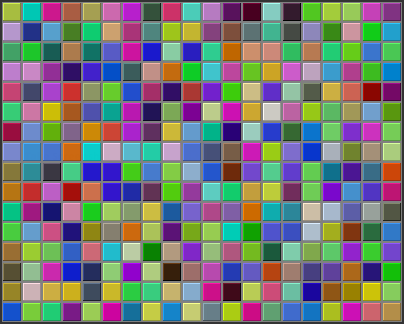

More on Program Design
Understanding how programs work is one thing. Designing a program to perform some particular task is another thing altogether. In Section 3.2, I discussed how pseudocode and stepwise refinement can be used to methodically develop an algorithm. We can now see how subroutines can fit into the process.
Stepwise refinement is inherently a top-down process, but the process does have a "bottom," that is, a point at which you stop refining the pseudocode algorithm and translate what you have directly into proper program code. In the absence of subroutines, the process would not bottom out until you get down to the level of assignment statements and very primitive input/output operations. But if you have subroutines lying around to perform certain useful tasks, you can stop refining as soon as you've managed to express your algorithm in terms of those tasks.
This allows you to add a bottom-up element to the top-down approach of stepwise refinement. Given a problem, you might start by writing some subroutines that perform tasks relevant to the problem domain. The subroutines become a toolbox of ready-made tools that you can integrate into your algorithm as you develop it. (Alternatively, you might be able to buy or find a software toolbox written by someone else, containing subroutines that you can use in your project as black boxes.)
Subroutines can also be helpful even in a strict top-down approach. As you refine your algorithm, you are free at any point to take any sub-task in the algorithm and make it into a subroutine. Developing that subroutine then becomes a separate problem, which you can work on separately. Your main algorithm will merely call the subroutine. This, of course, is just a way of breaking your problem down into separate, smaller problems. It is still a top-down approach because the top-down analysis of the problem tells you what subroutines to write. In the bottom-up approach, you start by writing or obtaining subroutines that are relevant to the problem domain, and you build your solution to the problem on top of that foundation of subroutines.
Preconditions and Postconditions
When working with subroutines as building blocks, it is important to be clear about how a subroutine interacts with the rest of the program. This interaction is specified by the contract of the subroutine, as discussed in Section 4.1. A convenient way to express the contract of a subroutine is in terms of preconditions and postconditions.
A precondition of a subroutine is something that must be true when the subroutine is called, if the subroutine is to work correctly. For example, for the built-in function Math.sqrt(x), a precondition is that the parameter, x, is greater than or equal to zero, since it is not possible to take the square root of a negative number. In terms of a contract, a precondition represents an obligation of the caller of the subroutine. If you call a subroutine without meeting its precondition, then there is no reason to expect it to work properly. The program might crash or give incorrect results, but you can only blame yourself, not the subroutine, because you haven't lived up to your side of the deal.
A postcondition of a subroutine represents the other side of the contract. It represents an obligation of the subroutine. It is something that will be true after the subroutine has run (assuming that its preconditions were met—and that there are no bugs in the subroutine). The postcondition of the function Math.sqrt() is that the square of the value that is returned by this function is equal to the parameter that is provided when the subroutine is called. Of course, this will only be true if the precondition—that the parameter is greater than or equal to zero—is met. A postcondition of the built-in subroutine System.out.print(x) is that the value of the parameter has been displayed on the screen.
Preconditions most often give restrictions on the acceptable values of parameters, as in the example of Math.sqrt(x). However, they can also refer to global variables that are used in the subroutine. Or, if it only makes sense to call the subroutine at certain times, the precondition might refer to the state that the program must be in when the subroutine is called.
The postcondition of a subroutine, on the other hand, specifies the task that it performs. For a function, the postcondition should specify the value that the function returns.
Subroutines are sometimes described by comments that explicitly specify their preconditions and postconditions. When you are given a pre-written subroutine, a statement of its preconditions and postconditions tells you how to use it and what it does. When you are assigned to write a subroutine, the preconditions and postconditions give you an exact specification of what the subroutine is expected to do. I will use this approach in the example that constitutes the rest of this section. The comments are given in the form of Javadoc comments, but I will explicitly label the preconditions and postconditions. (Many computer scientists think that new doc tags @precondition and @postcondition should be added to the Javadoc system for explicit labeling of preconditions and postconditions, but that has not yet been done.)
A Design Example
Let's work through an example of program design using subroutines. In this example, we will use pre-written subroutines as building blocks and we will also design new subroutines that we need to complete the project. The API that I will use here is defined in two classes that I have written: Mosaic.java, which in turn depends on MosaicCanvas.java. To compile and run a program that uses the API, the classes Mosaic and MosaicCanvas must be available. That is, the files Mosaic.java and MosaicCanvas.java, or the corresponding compiled class files, must be in the same folder as the class that defines the program.
So, suppose that I have access to an already-written class called Mosaic. This class allows a program to work with a window that displays little colored rectangles arranged in rows and columns. The window can be opened, closed, and otherwise manipulated with static member subroutines defined in the Mosaic class. In fact, the class defines a toolbox or API that can be used for working with such windows. Here are some of the available routines in the API, with Javadoc-style comments. (Remember that a Javadoc comment comes before the thing that it is commenting on.)
/**
* Opens a "mosaic" window on the screen. This subroutine should be called
* before any of the other Mosaic subroutines are used. The program will end
* when the user closes the window.
*
* Precondition: The parameters rows, cols, h, and w are positive integers.
* Postcondition: A window is open on the screen that can display rows and
* columns of colored rectangles. Each rectangle is w pixels
* wide and h pixels high. The number of rows is given by
* the first parameter and the number of columns by the
* second. Initially, all rectangles are black.
*
* Note: The rows are numbered from 0 to rows - 1, and the columns are
* numbered from 0 to cols - 1.
*/
public static void open(int rows, int cols, int w, int h)
/**
* Sets the color of one of the rectangles in the window.
*
* Precondition: row and col are in the valid range of row and column numbers,
* and r, g, and b are in the range 0 to 255, inclusive.
* Postcondition: The color of the rectangle in row number row and column
* number col has been set to the color specified by r, g,
* and b. r gives the amount of red in the color with 0
* representing no red and 255 representing the maximum
* possible amount of red. The larger the value of r, the
* more red in the color. g and b work similarly for the
* green and blue color components.
*/
public static void setColor(int row, int col, int r, int g, int b)
/**
* Gets the red component of the color of one of the rectangles.
*
* Precondition: row and col are in the valid range of row and column numbers.
* Postcondition: The red component of the color of the specified rectangle is
* returned as an integer in the range 0 to 255 inclusive.
*/
public static int getRed(int row, int col)
/**
* Like getRed, but returns the green component of the color.
*/
public static int getGreen(int row, int col)
/**
* Like getRed, but returns the blue component of the color.
*/
public static int getBlue(int row, int col)
/**
* Inserts a delay in the program (to regulate the speed at which the colors
* are changed, for example).
*
* Precondition: milliseconds is a positive integer.
* Postcondition: The program has paused for at least the specified number
* of milliseconds, where one second is equal to 1000
* milliseconds.
*/
public static void delay(int milliseconds)
Remember that these subroutines are static members of the Mosaic class, so when they are called from outside Mosaic, the name of the class must be included as part of the name of the routine. For example, we'll have to use the name Mosaic.open rather than simply open.
You'll notice that the comments on the subroutine don't specify what happens when the preconditions are not met. Although a subroutine is not really obligated by its contract to do anything particular in that case, it would be good to know what happens. For example, if the precondition, "row and col are in the valid range of row and column numbers," on the setColor() or getRed() routine is violated, an IllegalArgumentException will be thrown. Knowing that fact would allow you to write programs that catch and handle the exception, and it would be good to document it with a @throws doc tag in the Javadoc comment. Other questions remain about the behavior of the subroutines. For example, what happens if you call Mosaic.open() and there is already a mosaic window open on the screen? (In fact, the second call will simply be ignored.) It's difficult to fully document the behavior of a piece of software—sometimes, you just have to experiment or look at the full source code.
My idea for a program is to use the Mosaic class as the basis for a neat animation. I want to fill the window with randomly colored squares, and then randomly change the colors in a loop that continues as long as the window is open. "Randomly change the colors" could mean a lot of different things, but after thinking for a while, I decide it would be interesting to have a "disturbance" that wanders randomly around the window, changing the color of each square that it encounters. Here's a picture showing what the contents of the window might look like at one point in time:

With basic routines for manipulating the window as a foundation, I can turn to the specific problem at hand. A basic outline for my program is
Open a Mosaic window
Fill window with random colors
Move around, changing squares at randomFilling the window with random colors seems like a nice coherent task that I can work on separately, so let's decide to write a separate subroutine to do it. The third step can be expanded a bit more, into the steps: Start in the middle of the window, then keep moving to new squares and changing the color of those squares. This should continue as long as the mosaic window is still open. Thus we can refine the algorithm to:
Open a Mosaic window
Fill window with random colors
Set the current position to the middle square in the window
As long as the mosaic window is open:
Randomly change color of the square at the current position
Move current position up, down, left, or right, at randomI need to represent the current position in some way. That can be done with two int variables named currentRow and currentColumn that hold the row number and the column number of the square where the disturbance is currently located. I'll use 16 rows and 20 columns of squares in my mosaic, so setting the current position to be in the center means setting currentRow to 8 and currentColumn to 10. I already have a subroutine, Mosaic.open(), to open the window. To keep the main routine simple, I decide that I will write two more subroutines of my own to carry out the two tasks in the while loop. The algorithm can then be written in Java as:
Mosaic.open(16,20,25,25)
fillWithRandomColors();
currentRow = 8; // Middle row, halfway down the window.
currentColumn = 10; // Middle column.
while ( true ) { // Program ends when user closes the window.
changeToRandomColor(currentRow, currentColumn);
randomMove();
}With the proper wrapper, this is essentially the main() routine of my program. It turns out I decided to make one small modification after running the completed program: To prevent the animation from running too fast, I added the line "Mosaic.delay(10);" to the while loop.
The main() routine is taken care of, but to complete the program, I still have to write the subroutines fillWithRandomColors(), changeToRandomColor(int,int), and randomMove(). Writing each of these subroutines is a separate, small task. The fillWithRandomColors() routine is defined by the postcondition that "each of the rectangles in the mosaic has been changed to a random color." Pseudocode for an algorithm to accomplish this task can be given as:
For each row:
For each column:
set the square in that row and column to a random color"For each row" and "for each column" can be implemented as for loops. We've already planned to write a subroutine changeToRandomColor that can be used to set the color. (The possibility of reusing subroutines in several places is one of the big payoffs of using them!) So, fillWithRandomColors() can be written in proper Java as:
static void fillWithRandomColors() {
int row, column;
for ( row = 0; row < 16; row++ )
for ( column = 0; column < 20; column++ )
changeToRandomColor(row,column);
}Turning to the changeToRandomColor subroutine, we already have a method in the Mosaic class, Mosaic.setColor(), that can be used to change the color of a square. If we want a random color, we just have to choose random values for r, g, and b. According to the precondition of the Mosaic.setColor() subroutine, these random values must be integers in the range from 0 to 255. A formula for randomly selecting such an integer is "(int)(256*Math.random())". So the random color subroutine becomes:
static void changeToRandomColor(int rowNum, int colNum) {
int red = (int)(256*Math.random());
int green = (int)(256*Math.random());
int blue = (int)(256*Math.random());
Mosaic.setColor(rowNum,colNum,red,green,blue);
}Finally, consider the randomMove subroutine, which is supposed to randomly move the disturbance up, down, left, or right. To make a random choice among four directions, we can choose a random integer in the range 0 to 3. If the integer is 0, move in one direction; if it is 1, move in another direction; and so on. The position of the disturbance is given by the variables currentRow and currentColumn. To "move up" means to subtract 1 from currentRow. This leaves open the question of what to do if currentRow becomes -1, which would put the disturbance above the window (which would violate a precondition of several of the Mosaic subroutines). Rather than let this happen, I decide to move the disturbance to the opposite edge of the grid by setting currentRow to 15. (Remember that the 16 rows are numbered from 0 to 15.) An alternative to jumping to the opposite edge would be to simply do nothing in this case. Moving the disturbance down, left, or right is handled similarly. If we use a switch statement to decide which direction to move, the code for randomMove becomes:
int directionNum;
directionNum = (int)(4*Math.random());
switch (directionNum) {
case 0 -> { // move up
currentRow--;
if (currentRow < 0) // CurrentRow is outside the mosaic;
currentRow = 15; // move it to the opposite edge.
}
case 1 -> { // move right
currentColumn++;
if (currentColumn >= 20)
currentColumn = 0;
}
case 2 -> { // move down
currentRow++;
if (currentRow >= 16)
currentRow = 0;
}
case 3 -> { // move left
currentColumn--;
if (currentColumn < 0)
currentColumn = 19;
}
}The Program
Putting this all together, we get the following complete program. Note that I've added Javadoc-style comments for the class itself and for each of the subroutines. The variables currentRow and currentColumn are defined as static members of the class, rather than local variables, because each of them is used in several different subroutines. You can find a copy of the source code in RandomMosaicWalk.java. Remember that this program actually depends on two other files, Mosaic.java and MosaicCanvas.java.
/**
* This program opens a window full of randomly colored squares. A "disturbance"
* moves randomly around in the window, randomly changing the color of each
* square that it visits. The program runs until the user closes the window.
*/
public class RandomMosaicWalk {
static int currentRow; // Row currently containing the disturbance.
static int currentColumn; // Column currently containing disturbance.
/**
* The main program creates the window, fills it with random colors,
* and then moves the disturbance in a random walk around the window
* as long as the window is open.
*/
public static void main(String[] args) {
Mosaic.open(16,20,25,25);
fillWithRandomColors();
currentRow = 8; // start at center of window
currentColumn = 10;
while ( true ) {
changeToRandomColor(currentRow, currentColumn);
randomMove();
Mosaic.delay(10); // Remove this line to speed things up!
}
} // end main
/**
* Fills the window with randomly colored squares.
* Precondition: The mosaic window is open.
* Postcondition: Each square has been set to a random color.
*/
static void fillWithRandomColors() {
int row, column;
for ( row=0; row < 16; row++ ) {
for ( column=0; column < 20; column++ ) {
changeToRandomColor(row, column);
}
}
} // end fillWithRandomColors
/**
* Changes one square to a new randomly selected color.
* Precondition: The specified rowNum and colNum are in the valid range
* of row and column numbers.
* Postcondition: The square in the specified row and column has
* been set to a random color.
* @param rowNum the row number of the square, counting rows down
* from 0 at the top
* @param colNum the column number of the square, counting columns over
* from 0 at the left
*/
static void changeToRandomColor(int rowNum, int colNum) {
int red = (int)(256*Math.random()); // Choose random levels in range
int green = (int)(256*Math.random()); // 0 to 255 for red, green,
int blue = (int)(256*Math.random()); // and blue color components.
Mosaic.setColor(rowNum,colNum,red,green,blue);
} // end changeToRandomColor
/**
* Move the disturbance.
* Precondition: The global variables currentRow and currentColumn
* are within the legal range of row and column numbers.
* Postcondition: currentRow or currentColumn is changed to one of the
* neighboring positions in the grid -- up, down, left, or
* right from the current position. If this moves the
* position outside of the grid, then it is moved to the
* opposite edge of the grid.
*/
static void randomMove() {
int directionNum; // Randomly set to 0, 1, 2, or 3 to choose direction.
directionNum = (int)(4*Math.random());
switch (directionNum) {
case 0 -> { // move up
currentRow--;
if (currentRow < 0) // CurrentRow is outside the mosaic;
currentRow = 15; // move it to the opposite edge.
}
case 1 -> { // move right
currentColumn++;
if (currentColumn >= 20)
currentColumn = 0;
}
case 2 -> { // move down
currentRow++;
if (currentRow >= 16)
currentRow = 0;
}
case 3 -> { // move left
currentColumn--;
if (currentColumn < 0)
currentColumn = 19;
}
}
} // end randomMove
} // end class RandomMosaicWalk